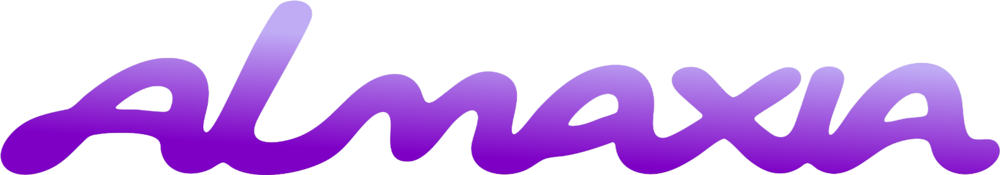

Gracias por participar de esta experiencia y formar parte de la obra.
Acá podés encontrar la fotografía de la creación que realizaron en conjunto. Cada trazo, movimiento y decisión fue parte de una experiencia compartida.


Buscá tu creación y llevate un recuerdo de lo que construyeron entre los tres.
buscar mi creación
Creado por Julia Gimenez
Festival Artimañas 2026 • La Plata, Buenos Aires